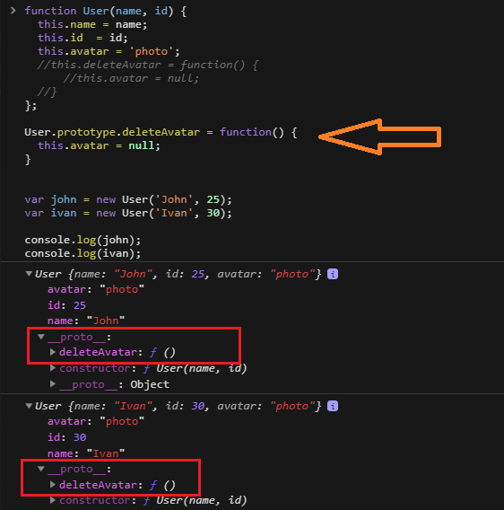

Inheritance in JavaScript
Object

Native prototype classes

To create an object, which doesn't have a prototype:
var obj = Object.create(null)
Function
Create function 'User'
Add method 'deleteAvatar'
Add a 'deleteAvatar' method to the prototype

Create an 'Admin' object that inherits all properties from 'User'
Add a method to the new ‘Admin’ object
ES6
instanceof
function User() {}
//create object
var user = new User();
// check
console.log( user instanceof User ); //true
THAT IS ALL ! THANK YOU!!!